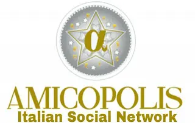
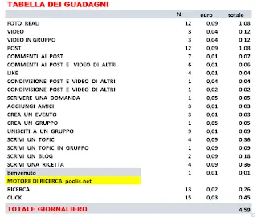
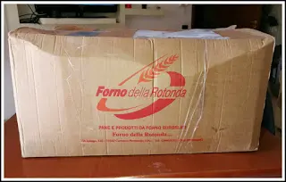
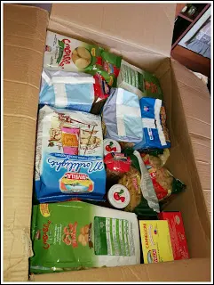
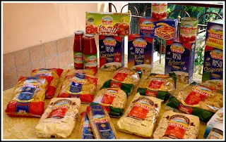
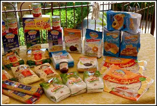
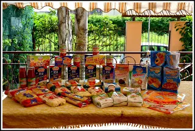
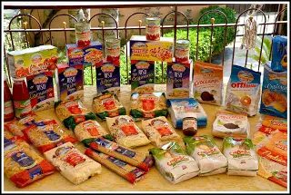
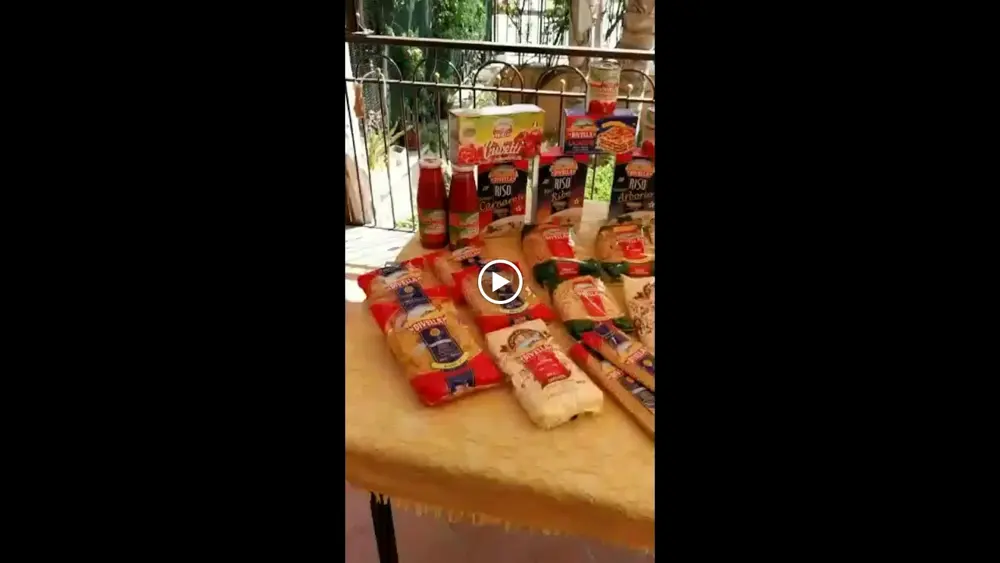

Amicopolis social ed il mio acquisto

Amicopolis è una piattaforma, un social network che ti paga. Avete capito bene, sapete usare bene ormai Facebook no?! Noi condividiamo le nostre giornate, le nostre attività, commentiamo a destra e a manca, elargiamo like a più non posso, pubblichiamo foto e video in quantità.
E in tutto questo cosa ne ricaviamo? NIENTE.
Abbiamo solo trascorso del tempo (per non dire abbiamo perso tempo).
Da oggi con amicopolis facciamo le stesse e identiche cose ma con la differenza che ad ogni azione corrisponde un guadagno.
Vi metto il prospetto qui sotto per farvi rendere un pò l'idea.

Pubblicando dunque 12 foto al giorno e stesso numeri di stati già accumuliamo 1,18 crediti.
Poi vabbe ci sono altre cose, come potete leggere, che portano ad un accumulo quotidiano fino al raggiungimento di 4 € circa al giorno.
Al raggiungimento dei 300 € potete richiedere il pagamento.
Vi verrà riconosciuto un importo pari a 240 €, il resto viene trattenuto perché riconosciute come tasse, ma tutto sommato anche così conviene.
Ogni persona può creare fino a 6 account tutti, con lo stesso nominativo poiché vanno poi verificati con il documento.
In più questo social è fornito anche di uno shop per acquistare con i nostri crediti direttamente.
Tutto questo ripeto, accumulando e spendendo nel modo del tutto gratuito.
Ogni mese poi, se si fa minimo un acquisto di 10 € abbiamo diritto al cashback mensile. Questo è un pò più complicato da capire per chi non è nel sito.
Vi spiego i cashback del social:
- PAYBACK = si ottiene dai pacchetti pubblicitari Polis.
- CASHBACK FOR YOU = si ottiene dai TUOI acquisti personali, si riceve UNA SOLA VOLTA il giorno successivo all'acquisto. E' inoltre variabile in base all'articolo scelto (lo vedete sull'articolo quando lo acquistate).
- CASHBACK FOR ALL = è l'importo che andrà distribuito il giorno successivo, somma di tutti gli acquisti in area shopping (lo vedete sull'articolo scelto).
- CASHBACK GIORNALIERO = si ottiene dagli acquisti effettuati da TUTTI nell'area shopping, si riceve OGNI GIORNO e varia in base a quanto è stato venduto il giorno precedente nell'area shopping.
il cashback giornaliero di tutti i gg si riceve solo se hai fatto almeno un acquisto nel mese precedente.- Il cashback per te (CASHBACK FOR YOU ) per esempio, è quello che ricevi al momento del tuo acquisto, che consiste nel 3%. (Ogni 10€ avrai 0,30 cent).
- Il cashback per tutti (CASHBACK FOR ALL) è il 17% dell'acquisto e viene ripartito il giorno successivo, tra tutti gli utenti che nel mese precedente abbiano fatto un acquisto di almeno 10€.
Io questo mese di aprile con 65 € circa ho fatto una bella spesa tutta firmata Divella.

Ovviamente io vi sto spiegando per sommi capi il tutto ma se vi registrate e volete spiegazioni più dettagliate sarò felice di aiutarvi.





Il sito Amicopolis ha, come ogni cosa purtroppo, dei contro.
- Ovvero, è un pò lento.
- Bisogna inserire dati veritieri perchè poi dopo la registrazione bisogna inviare un documento di riconoscimento in quanto poi al raggiungimento della soglia pagano ad una persona vera e non fasulla (questa regola non è un contro ma bensì la trovo anche molto utile per noi).
- Stare attenti ai venditori perchè ci sono molti fake.
- Fare screen di tutto ciò che acquistate prima, durante e dopo perchè quelli di amicopolis poi vogliono le ricevute altrimenti non pagano.
- Non mandare troppi ticket altrimenti si viene bannati senza motivo.
In fin dei conti io comunque trovo che sia un sito da curare ancora un pò ma che è un ottimo lavoro per chi non può lavorare.

Io consiglio tutti di iscriversi perchè, anche se vi dedicate ad un solo account, è un guadagno in più.